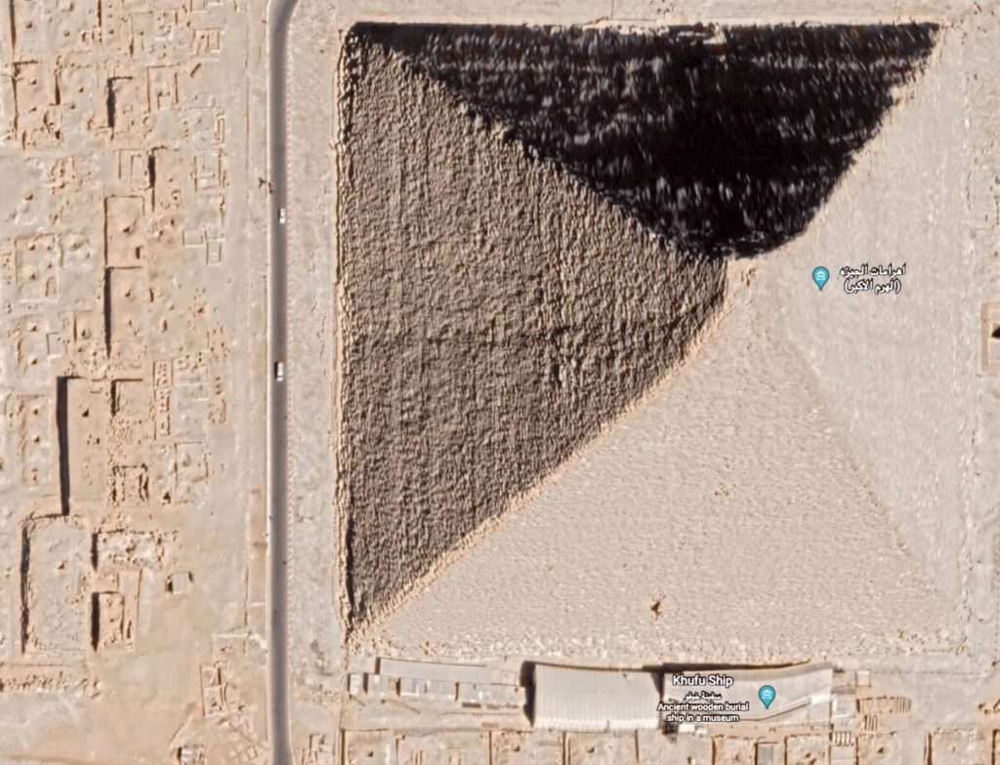

ဂီဇာ ပိရမစ် ကြီးရဲ့ ဓါတ်ပုံတွေဟာ ဆိုရင်လဲ လူတိုင်းလိုလို တွေ့ဖူးကြပါတယ်။
ဒီ ဂီဇာ ပိရမစ်ကြီးဟာ မြောက်လတ္တီတွတ် ၂၉.၉၇၉၂၄၅၈• မျဉ်းပေါ်မှာ တည်ရှိနေပါတယ်။
ဒီ တည်နေရာဟာ ဘာမှ မထူးခြား သလိုပါပဲ။ ဒါပေမယ့် အလင်းရဲ့ အလျှင်နှုန်းဟာလဲ တစ်စက္ကန့်ကို ၂၉၉,၇၉၂.၄၅၈ မီတာ ဖြစ်နေတယ် ဆိုတာကို သိတဲ့ သူတွေ အတွက်တော့ အလွန်ကို ထူးခြားဆန်းကြယ်တဲ့ တိုက်ဆိုင်မှုကြီး ဖြစ်လို့ နေပါတယ်။
ဂီဇာ ပိရမစ်ကြီးရဲ့ တည်နေရာ လတ္တီတွတ် မျဉ်းတန်းနဲ့ အလင်းရဲ့ အလျှင်နှုန်းနဲ့ ဂဏန်း ၉ လုံးထိ တိတိကျကျ တူညီနေအောင် တိုက်ဆိုင်နေတာက အတော်ကို ထူးခြားတယ်လို့ ပြောရပါလိမ့်မယ်။
ဒါဟာ တကယ်ပဲ တိုက်ဆိုင်မှု သက်သက်ပဲလား။ ဒါမှမဟုတ် ရှေးဟောင်း အီဂျစ် ပညာရှင်တွေက တမင်ပဲ သူတို့ရဲ့ ပိရမစ်ကြီးရဲ့ တည်နေရာကို အလင်းရဲ့ အလျှင်နှုန်းနဲ့ ဂဏန်းထပ်တူကျအောင် ရည်ရွယ်ချက်နဲ့ တည်ဆောက်ခဲ့တာလား။
အခုလို ဂီဇာ ပိရမစ်ကြီးရဲ့ တည်နေရာနဲ့ အလင်းအလျှင်နှုန်းနဲ့ ကိန်းဂဏန်း ထပ်တူကျနေတာဟာ တစ်ခုတည်းသော ဆန်းကျယ်မှု မဟုတ်ပါဘူး။ အခုထိအောင်ကို ရှေးဟောင်း ပညာရှင်တွေဟာ ဒီပိရမစ်ကြီးကို ဘယ်လိုတည်ဆောက်ခဲ့လဲ ဆိုတာကို အဖြေထုတ်လို့ မရသေးပါဘူး။
နောက်တစ်ခု ထူးခြားတာကတော့ ဒီ ဂီဇာပိရမစ်ကြီးဟာ သံလိုက်အိမ်မြောင် နဲ့တိုင်းလို့ရတဲ့ သံလိုက်မြောက် (Magnetic North) အရပ်နဲ့ တန်းနေတာ မဟုတ်ပဲ တကယ့် ကမ္ဘာ့ဝင်ရိုး လည်နေတဲ့ မြောက်အရပ် အစစ် (True North) နဲ့ တန်းနေတာပဲ ဖြစ်ပါတယ်။
သံလိုက်မြောက် အရပ်ကို ရှာဖွေရတာ လွယ်ပေမယ့် ရှေးဟောင်းအီဂျစ် လူမျိုးတွေရဲ့ နည်းပညာနဲ့ဆို မြောက်အရပ် အစစ်ကို ရှာဖွေဖို့ဆိုတာ မဖြစ်နိုင်ပါဘူး။ ဒီလို မြောက်အရပ် အစစ်ကို ဘယ်လိုရှာဖွေခဲ့လဲ ဆိုတာ ပညာရှင်တွေ အခုထိ အဖြေရှာလို့ မရကြ သေးပါဘူး။

စိတ်ဝင်စားစရာ သမိုင်း ဆောင်းပါးများ
Valentine Day ရဲ့ သမိုင်းအမှန်
Saint Valentine ရဲ့ မျက်နှာ
အခုနက ပထမဆုံး ပြောခဲ့တဲ့ ဂီဇာပိရမစ်ကြီးရဲ့ တည်နေရာနဲ့ အလင်းရဲ့ အလျှင်နဲ့ ဆက်စပ်မှုကိုပဲ ပြန်ကြည့်လိုက် ကြရအောင်ပါ။
ဒီတိုက်ဆိုင်မှုကို သာမန် မတော်တဆ တိုက်ဆိုင်မှုသာ ဖြစ်တယ်ဆိုပြီး လက်မခံတဲ့ ပညာရှင် အများအပြား ရှိပါတယ်။ သူတို့ရဲ့ ပြောကြားချက်တွေကတော့ –
၁။ ဂီဇာ ပိရမစ်ကြီးရဲ့ တည်နေရာနဲ့ တိုက်ဆိုင်နေတဲ့ အလင်းအလျှင်ကို ဖော်ပြတဲ့ ယူနစ်ဖြစ်တဲ့ “မီတာ” ကို ၁၇၀၀ ပြည့်နှစ်တွေကျမှ တီထွင်ခဲ့တာ ဖြစ်ပါတယ်။ ရှေးအီဂျစ်တွေဟာ မီတာကို အသုံးပြုခဲ့တာ မဟုတ်ပဲ “တံတောင်” နဲ့ အသုံးပြု တိုင်းတာခဲ့တာ ဖြစ်ပါတယ်။
၂။ မြောက်လတ္တီတွတ် ၂၉.၉၇၉၂၄၅၈• မျဉ်းဟာ ဂီဇာ ပိရမစ်ကြီးရဲ့ ထိပ်စွန်းကို အတိအကျ ဖြတ်သွားတာ မဟုတ်ပဲ ထိပ်စွန်းကနေ ၁/၃ လောက်နေရာကနေ ဖြတ်သွားတာ ဖြစ်ပါတယ်။
၃။ ရှေးဟောင်းလူသားတွေဟာ အလင်းရောင် ရွေးလျားတယ် ဆိုတဲ့ အယူအဆ မရှိကြပါဘူးတဲ့။ အလင်းရောင်မှာ အမြန်နှုန်း ရှိတယ်ဆိုတာ ၁၆၇၆ ခုနှစ်မှာမှ တိုင်းတာပြီး သက်သေပြနိုင် ခဲ့တာ ဖြစ်ပါတယ်။
၄။ ကမ္ဘာမြေကြီးကို လတ္တီတွတ်၊ လောင်ဂျီတွတ် မျဉ်းတွေနဲ့ ပိုင်းခြားသတ်မှတ်တာကိုလဲ အီဂျစ်ခေတ်က သူတွေ မလုပ်ကြ သေးပါဘူး။
ဒါ့ကြောင့် သိပ္ပံပညာရှင်တွေကတော့ ဒီတိုက်ဆိုင်မှုဟာ တိုက်ဆိုင်မှု သက်သက်သာ ဖြစ်ပြီး အချို့ထင်နေသလို အီဂျစ်ခေတ် ပညာရှင်တွေရဲ့ စနစ်တကျ တွက်ချက်မှုကြောင့် ဖြစ်လာတာ မဟုတ်သလို အခြားကမ္ဘာက ဂြိုလ်သားတွေ လာပြီး တည်ဆောက်သွားတာကြောင့်လဲ မဟုတ်ရပါကြောင်း တင်ပြလိုက်ရပါသည်။
References:
Great Pyramid of Giza has THIS in common with speed of light | Express
Is The Great Pyramid of Giza’s Location Related to the Speed of Light? | Snopes